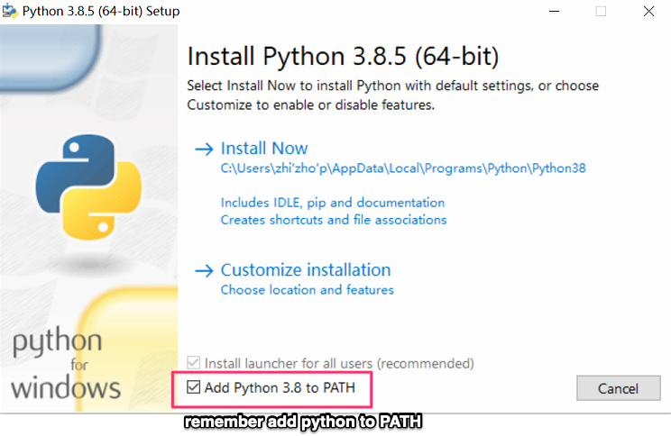
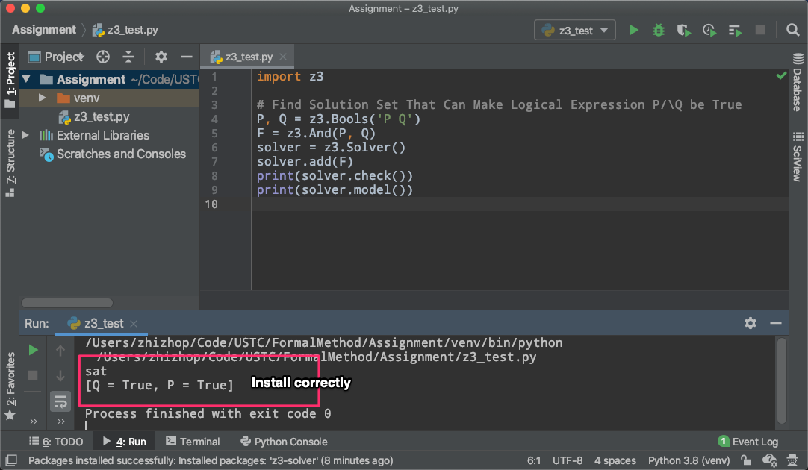

In this course, there will be (roughly) one assignment per week. The purpose of these assignments is to familiarize you with the main course topic. One novel point is that all these assignments will be finished in a mechanized way, that is, you will finish them using some tools. The tools used in this course are Coq, Z3, etc..
This is the first assignment, in Part A and B, you are required to install all the necessary tools and software, and have some ideas of how they work and how to use them. In Part C，you're going to solve several problems as a Python warming up. Some problems are tagged with Exercise, which you should solve. And one problem is tagged with Challenge, which is optional. For any problems, feel free to ask the TAs for help.
When you finished the assignment, zip you code files (exclude .venv folder) with file name studentid-assignment1.zip (e.g SA19225111-assignment1.zip), and submit it to Graduate Information Platform. The deadline is 11:59PM of 17th March 2023 (Beijing time). Any late submission will NOT be accepted.
Coq is a famous and also widely used formal proof management system. It provides a formal language to write mathematical definitions, executable algorithms and theorems together with an environment for semi-interactive development of machine-checked proofs. See more information about Coq, and documentation of Coq.
In this class, we will do theorem proving for propositional logic, predicate logic and constructive logic in Coq.
= monday : day = tuesday : day
Z3 is a theorem prover/solver from Microsoft Research. In this course, you'll solve SAT & SMT problems using Z3, and also you will have the opportunity to solve many realistic problems using Z3: say, program verification, symbolic execution, reversing engineering from information security, etc.. For more information about Z3, you can check it's project homepage.
In this course, we recommend you to use the Python Binding of Z3 (we'll be using the Python binding to send out the assignments. Of course, there are other bindings for Z3, say OCaml or .Net bindings, if you want to use these bindings, talk to the TAs in advance). You can download Python installation package from official site. We recommend Python 3.7 or higher version, but if you want to manage multiple versions of Python, try pyenv or anaconda.
tips: if you are using Windows, please remember add your Python binary to the PATH environment. The figure below demonstrates what you should do at installation time：
The Z3Py package is the Z3 API in Python (Z3 also has the C, .Net and OCaml APIs). The next steps show you two ways to install Z3Py package. Actually, both of them are depend on pip.
PyCharm (recommended):PyCharm is one popular Python IDE, it can effectively manage your Python development environment. You can download PyCharm from the official website. you can use the community edition for free or register an account with your USTC email to get education-free license for professional edition.
After the the PyCharm is installed, you can follow the following steps to install Z3Py:If you prefer to use command line, it's also recommended to use virtualenv to manage Python environment.
$ python -m pip install --user virtualenv
$ python -m venv formal_method
$ source formal_method/bin/activate
$ pip install z3-solver
View this simple logical proposition. And we want to get the solution that make it satisfiable (i.e., let it be True):
P /\ Q
Download this code and run it.
If Z3 is installed correctly, z3_test.py will run without any error and the output should look like:
Python is a widely used programming language and is easy to learn and use. Most of our assignments are written in Python, so if you have not used Python before, be sure to spend some time learning the basic syntax or the Python tutorial.
This and the future assignments will use AST (abstract syntax tree) to encode formal languages. To let you get familiarized yourself with the creation and operations on AST.In this part, you'll implement a very simple arithmetic calculator in Python.
The syntax for the calculator language is described by the following context-free grammar (CFG):
exp ::= num
| exp + exp
| exp - exp
| exp * exp
| exp / exp
| (exp)
The expressions generated from the CFG above can be represented by trees. For instance, the expression 3 * 4 + 10 / 2 to AST like:
+
/ \
/ \
* /
/ \ / \
/ \ / \
3 4 10 2
Based on the AST data structures, we can implement various computations on the AST. One special and important operation you'll be building is an interpreter. Simply speaking, an interpreter reads in some program as input, and output its result. Consider again the example 3 * 4 + 10 / 2, the interpreter will output 17>.
There is another popular IDE (my favorite): Proof General, and it's more popular in the Coq community. You may try it.
There are only a few commands you need to know to use ProofGeneral effectively. They are:
This finishes the assignment, zip you code files (exclude .venv folder) with file name studentid-assignment1.zip (e.g SA19225111-assignment1.zip), and submit it to Graduate Information Platform..